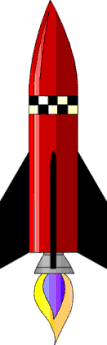
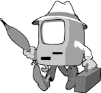
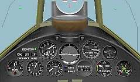

| Ethics Dictionary | Conditions Formulas | PTS Glossary | FAQs |
|
|
| Ethics Dictionary | Conditions Formulas | PTS Glossary | FAQs | |
Appendix
The Admin Scale
Scale of Importance
We all have dreams and goals. To make them come true take commitment and organizing skills. To take anything from an airy idea or dream and make it into a solid reality is what has to happen. This is a cycle of action. A cycle of action is a start-change-stop; begin-continue-end, or be-do-have sequence of events. You assume a certain beingness to pursue a certain goal, you do what you have to do and end up with a havingness, the valuable final product and eventually the accomplished overall goal.
Example: Joe decides he wants to start a bakery and make it the most successful bakery in town. He assumes the beingness of a baker (be). He bakes loaves of bread (do). He ends up with baked loaves of bread that he then sells (have). Doing that over and over - and intelligently doing everything else needed - he will end up with a successful bakery. Joe's Bakery is praised by all in town.
 |
Joe has to bake and sell an awful lot of |
The Admin Scale is an organizing scale that can help one sort out what it takes. It gives a sequence of steps to go though to organize an activity and iron it out. It gives the relative seniority of these steps, starting at the top with the overall goal. It is also called The Scale of Importance as each lower step is less in importance and serves as a support activity for the steps above it. A lower step should come about as a logical way to accomplish the step above and is not capable to stand on its own.
In practice you will work this scale over, starting at the
top and align each lower step to help the overall goal and especially the
step just above it. The purposes, for instance, have to be derived at by looking at the overall goal and ask "How do we get there?" In actual use
an Admin Scale would have to be adjusted regularly: more and more
details get added as you learn more about the activity and new situations arise
and get sorted out.
When making an Admin Scale you would work it up and down numerous times until
each level is in alignment with the others and help achieving the overall goal.
It can also be applied to an already existing activity as a way to analyze and understand it and straighten it out.
The Admin Scale can be applied to companies and groups, to a marriage or to personal activities - actually to just about anything as long as you can state a goal for that activity, organism or even object.
 |
Goals | The Admin Scale can be compared to a rocket
The nose points very precisely towards the goal. Note: Blue area is 'Be' (or 'will Be') in the overall cycle of action. |
| Purposes | Note: Red area is overall
'Do'.
In a sequence of seniority we then
have purposes, policies, |
|
| Policies | ||
| Plans | ||
| Programs | ||
| Projects | ||
| Orders | ||
| Ideal Scenes | Note: the gray is overall
'Have'. With Ideal Scenes we get down to a more tangible type of goal. It's a desired state of affairs (beingness) here and now. It's a well-functioning engine, and all other systems, of the rocket. |
|
| Statistics | The statistics of the operation measures doingness
and production. It's the instrument panels pilot and engineers use to monitor the flight. |
|
| Valuable Final Products |
VFP is a tangible end product (havingness) here and now
that is exchanged with the outside world: the thrust that propels the
rocket towards its destination. |
Goals
Are known objectives toward which an action or whole
activity is directed
with the purpose of achieving that end.
A Goal is most effective when formulated as an accomplished state of affairs.
Stating and viewing it this way helps us to align all the factors below in the right perspective - from a
causative viewpoint. In the example of the rocket it could be "Safely
arrived at Mars in August year 2120 with all equipment intact, crew in good
health and station fully set up for its future mission".
It's an Ideal Scene of sorts. It is too lofty to touch yet, but it should be
fully visualized and shared by all.
You could say it is related to 'beingness' as it is most effective when you postulate it as a
point from where you view things. If you can see yourself as having achieved
that as a natural and given thing, as your birth right so to speak, it tends to
magically come true - if also you follow through and learn what needs to be learned and
do what needs to be done. If you see it as a remote destination 'out there somewhere' or in a
distant future and are all confused about how to get there it is much less
likely you will ever get there.
It could also be argued that a Goal is a postulated reality or havingness. You
formulate it as an accomplished state of affairs for maximum workability. The truth is a Goal is
a Goal, not a beingness, doingness or havingness. It's an idea and a guiding
light. It's the Northern Star guiding you safely through the night. When we
pursue
any major activity the goal came first. Someone had a dream and decided to go
for it. Setting the Goal is always where it starts and the Goal should be in
plain view right to the end.
Purposes
Are the lesser goals that apply to specific activities
or subjects. We see the key question as "What do we have to do to get to
the goal?" The Purposes outline the broad activities needed to achieve the goal. In
our example we would have Purposes something along the lines: 1. Developing and testing
the technologies needed. 2. Building the rocket. 3. Educating the crew in the technologies and survival
skills needed for space travel. 4. Generating continued political and financial
support. 5. Educating the crew in the technologies and survival skills needed
for their mission once landed on Mars.
If your overall personal goal is to heal people (or "healed people as a
result of your work") you better practice medicine and
other healing practices.
Policies
These are the rules of the game in place to make a group
or activity work as a coordinated
body. Policies are set and adjusted by the leadership. Policy makes up a body of
experience and is a major way to quickly educate new group members into becoming
effective workers; it tells them what to do, how to do it and prevents them from making known mistakes. Good
Policies would hold the form of the group or activity and make it possible to react
quickly and effectively to repeat situations. Policy would be added to regularly to
incorporate a new pattern of action when a general solution is worked out for
that new situation. You could compare Policies to the software the group or
activity runs on.
On a personal level Policy are habits, routines and 'survival instincts' used to
tackle the problems of life.
When you study a species, or simply watch a nature program about a certain type of animal, you will see how they have a carefully worked out solution for all kinds of obstacles and problems of survival. Apparently all these survival patterns developed over time and got stored on an instinctual level. The species got 'programmed' on how to raise their young ones, how to respond to attacks, survive famine, draught, etc., etc. This serves as 'Policies' on a biological level.
 |
Policy is ideally like a software |
Note: Be-do-have is the general sequence in a cycle of action. The Admin Scale itself can be viewed in various sub-sections that each contain this sequence. This can be used when aligning the levels to each other. Thus Policy can be seen to outline a Be. The Purposes would be the Do and the goal the Have for such a cycle within the overall cycle. This can just be used as a double-check when aligning levels and does not change the overall flow of the scale.
Plans
A plan is a major course of action outlined to overcome a certain situation
one has run into or is likely to run into. It is a broad statement of what needs
to be done. Plans can exist for all kinds of situations. They are not
necessarily carried out until called for. Pentagon is said to have plans for
just about any military situation possible around the world. These plans are
just on file until a crisis would arise in a particular country or area.
When
Plan A doesn't work you should have Plan B ready for use.
Programs
A Program is a series of practical steps in sequence to carry out a plan. One usually sees a Program following the discovery of a situation that needs to be handled. You have an overall plan. It now has to be executed. You break it down in doable steps and complete one step at the time. That is your Program. When all the steps are done you should end up with the result the plan called for. A plan is often broken down into a number of Programs to be executed.
Successfully executed Programs will often result in
new policies as the experience gained should be made part of the permanent guidelines,
habits and routines.
Projects
A Project is a smaller scale program. When a program
step for example is more extensive than first assumed a Project can be
undertaken to get that step done. Instead of getting everybody caught up in that
one step and loose sight of the overall program you define a Project, lay out
the steps to complete and get them done. You can ask for outside help or hire
people to do the Project in order not to loose focus on your overall progress.
Orders
Orders are usually verbal or written directions. It is telling somebody what to do and telling them to get it done now. Orders are needed 'on the floor' to get a program step or a project done and done in time.
The plan is the big
solution to a major problem. The programs are how you get it done on a practical
level. The little problems inside a program are solved by projects, and inside the projects are the smaller ones; the small problems are solved by orders.
Ideal Scenes
The Ideal Scene is the ideal state of the physical and mental conditions needed to put out one's product in volume. It is the best obtainable production environment you can dream up. It includes training, attitude, facilities, resources, customers, demand, etc., etc. We are not talking about too lofty ideas at this level of the Admin Scale. We are talking about a busy, productive and happy place. The Ideal Scene has to be consistent with the purpose of the activity and what is actually obtainable within ones means.
Note: Be-do-have is the general sequence in a cycle of action. The Admin Scale itself can be viewed in various sub-sections that contain this be-do-have. This can be used when aligning the levels. Thus Ideal Scenes can be seen to outline a Be, an ideal production environment. The Statistics would be the Do, the actual production. The Valuable Final Products are the Have, the output, for such a cycle within the overall cycle. This can be used as a double-check when aligning and adjusting the different levels to each other.
Statistics
A Statistic is a number or amount compared to an earlier number or amount of the same thing. Statistics refer to the quantity of work done or the value of it in money. The most telling observations in a company (or a country) are their statistics. They show you the production taking place. They measure what is done.
Especially within a company or organization, where useful statistics are easy to find, they can be useful indicators of how the health, activity and rate of success are. Statistics can be applied to personal matters as well - sometimes it takes stretching the definition to more intangible products or using very incomplete statements of the statistics. Sometimes you can take 'statistics' to mean objective evidence.
The exercise of figuring out the right statistics for an activity is quite enlightening. One has to figure out what the Valuable Final Products are, including how they benefit the consumer. "What makes the user appreciate a product or service, pay good money for it and come back for more?" has to be part of it. That's the value part. You have to figure out how to measure these VFPs in an objective way and, last but not least, compose a mix of statistics to keep the activity as a whole going and staying on track.
 |
|
The stats are ideally an instrument |
Note: one problem with putting too much emphasize on statistics is, they tend to distort the activity as people pursue what is counted (or paid for) and leave other less high-profile functions neglected. They forget to maintain and repair equipment as that is 'downtime' and 'not productive'. This narrow focus is called Stat Push. Stat Push turns into greed when the main statistic is money. Should this happen, it is necessary to stress that Stats are near the bottom of this Scale of Importance and has to add up to a Valuable Final Product. To manage by statistics it is necessary to keep a long list of carefully worked out and balanced statistics, and still be able to take a step back and simply look, when using statistics as a management system leads to absurd situations. If we take a service, the VFP of a service is to fill a need leading to satisfied customers. This ensures repeat business. Unless you deliver that you will soon go broke. 'Repeat Business' is thus an important stat for a service organization to predict their continued success.
Valuable Final Products (VFP)
A Product is something that has been brought into existence; It's the end result of a creation; it is a completed cycle of action which then can be represented as having been done.
A Valuable Final Product is a completed thing that can be exchanged with other activities in return for support. The support usually adds up to food, clothing, shelter, money, tolerance and cooperation (goodwill). It could as easily be named a valuable exchangeable product. By definition it is something for which you can exchange the services and goods of others. Even an employee of a larger organization has to put his service or article in the hands of some other co-worker, who finds it useful, before it could be called a VFP.
Obviously the choice of words will vary when you talk commercial company compared to personal affairs. To illustrate this a little better we have made up a number of examples from different parts of life.
The next page will give you some practical examples on Admin Scales.
|
|
|
|
|